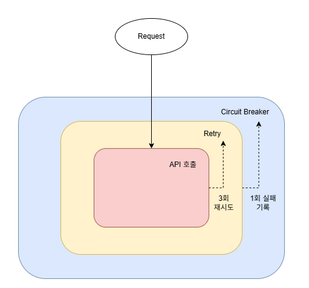
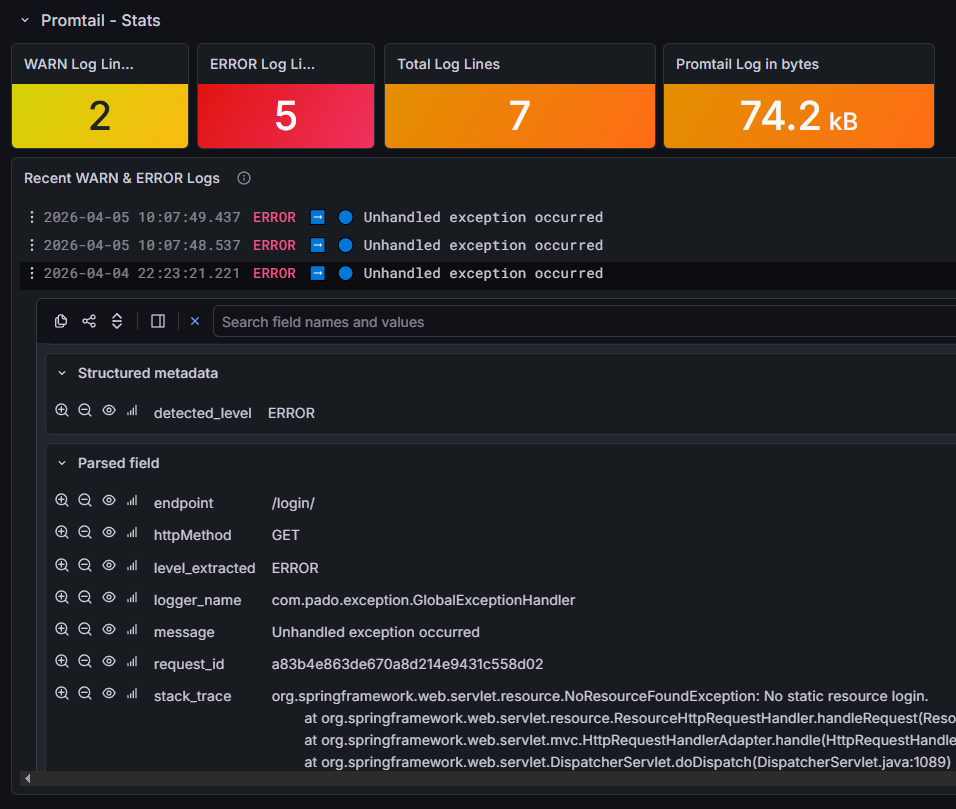

수정 필요
서비스의 채팅 기능은 AI API를 호출하여 사용합니다. 외부 API를 올바르게 컨트롤하지 못할 경우 사용성이 떨어지는 것 뿐만 아니라 서비스 장애로 이어질 수 있다는 점을 인지하고 문제를 정의하였습니다.
저는 이 문제를 제어, 탐지, 분석 단계로 나누어서 해결하였습니다.
문제가 생길 수 있는 부분을 제어하는 것, 문제를 발견할 수 있는 탐지 가능성, 큰 비용을 들이지 않고도 분석 가능한 구조를 고려하였습니다.

외부 API 호출의 안정성을 위해 Resilience4j라는 회복 탄력성 도구를 이용하였습니다.
API 호출을 Retry로 감싸고, Circuit Breaker로 한번 더 감싸는 것으로 재시도 로직에 3회 모두 실패할 경우 Circuit Breaker에 기록되도록 하였습니다.
반복적으로 요청에 실패하는 경우 Circuit Breaker가 작동하게 되어 API 호출을 원천적으로 차단할 수 있습니다.
재시도 로직이 없다면 사용자는 일시적인 문제에도 채팅 응답을 받기 실패할 수 있습니다.
또한, Circuit Breaker가 없다면 외부 API 서버가 사용 불가능한 상태에 빠졌을 때 API 호출을 조기에 차단할 수 없게 되어 쓰레드의 점유 시간이 증가하게 됩니다. 이는 서비스 장애로
이어질 수 있습니다.
Resilience4j의 Retry와 Circuit Breaker의 메트릭을 추가하여 외부 API 호출 상태를 탐지할 수 있는 형태로 개선하였습니다. 메트릭을 추가하지 않는다면 Circuit Breaker가 작동하여 API 호출이 차단되어도 개발자는 인식할 수 없습니다.
또한, Grafana의 대시보드로 Retry와 Circuit Breaker의 상태를 확인할 수 있도록 시각화하고, Retry 실패율이 높거나, Circuit Breaker가 작동했을 경우 이메일로 알림을 보내도록 설정했습니다.
문자열 로그를 그대로 사용하지 않고 JSON 구조화를 하는 것으로 필드를 구분하였습니다. 그리고 Grafana에서 필드별로 조회하도록 설정하여 언제, 어디서, 어떤 문제가 있는지 명확하게 확인할 수 있도록 개선했습니다.

이번 개선 작업은 API 호출 안정성을 높이는 수준을 넘어 “운영 가능한 형태”로 만들었다는 점에서 의미가 있습니다.
개선 전에는 문제가 발생하더라도 사전에 인지하거나 대응하기 어려웠고, 개발자가 직접 개입해야 문제를 파악할 수 있는 구조였습니다.
첫째, 제어 단계의 재시도 로직은 API 호출의 일시적인 문제를 방지하고 무제한으로 대기하는 상태를 방지합니다. 일정 기준 이상 실패할 경우에는 Circuit Breaker가 작동되어 API 호출을 빠르게 차단합니다.
둘째, 탐지 단계의 메트릭과 이메일 알림 추가를 통해 문제점을 실시간으로 인지할 수 있는 상태로 전환했습니다.
셋째, 분석 단계에서 로그 JSON 구조화를 통해 필드 별로 명확하게 역할을 구분하여 원하는 정보를 추출하기 쉬운 구조로 개선하였습니다. 이를 시각화 하는 것으로 문제 상황을 “추적”하는 것이 아닌 “조회”로 해결할 수 있게 되었습니다.
이번 작업을 통해 운영을 하면서 문제를 어떻게 통제할지 정하고 빠르게 감지할 수 있는 구조의 중요성을 깨달았습니다. 특히 외부 API를 사용하는 서비스에서 정상 흐름보다 비정상 흐름을 어떻게 처리할 것 인지가 관건이라는 것을 느꼈습니다.